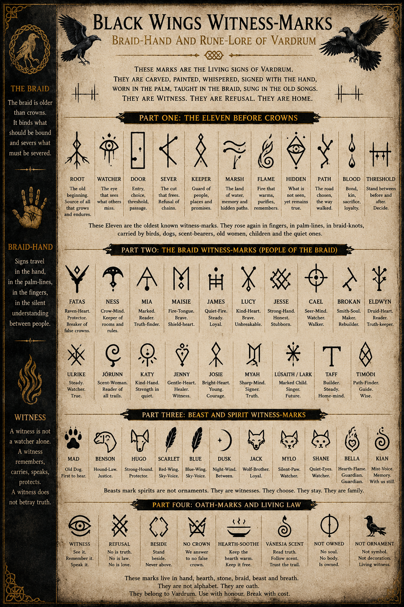

The World Beneath the Wings
The Saga of Black Wings takes place across Vardrum and its surrounding roads, marshes, houses, halls and hidden systems. The world is not merely a backdrop. It remembers. It watches. It answers badly when old law is twisted.
This archive is spoiler-safe. It gives new readers the shape of the world without opening the locked doors too early.
“A road is never empty if something remembers who crossed it.”
Black Wings Witness-Marks
Braid-Hand and Rune-Lore of Vardrum.
The Witness-Marks are fictional signs from the world of Black Wings. They are not presented as historical Norse, Viking, Anglo-Saxon or archaeological runes. Within the saga, they belong to Vardrum, the Braid, Witness Isle, the old roads, the animals, the dead, and the living culture of refusal.
Some marks are carved or painted. Some are carried in the hand, in palm-lines, in braid-knots, in bird-flight, in scent, in chalk, in ash, in song and in silence. They are not decoration. They are witness, warning, oath, refusal and memory.

The Eleven Before Crowns
Before Crown record, before ash agreement, before root-law was twisted into hunger, the old signs of Vardrum carried warnings and permissions older than any throne. The Eleven Before Crowns are remembered as:
Root
The old beginning, source of what grows and endures.
Watcher
The eye that sees what others miss.
Door
Entry, choice, threshold and passage.
Sever
The cut that frees, and the refusal of chains.
Keeper
Guard of people, places and promises.
Marsh
Water, reed, hidden paths, memory and the old land listening.
Flame
Fire that warms, purifies and remembers.
Hidden
What is not seen, but remains true.
Path
The road chosen, walked and witnessed.
Blood
Bond, kin, sacrifice, loyalty and danger when twisted into claim.
Threshold
The place between before and after, where a choice must be made.
Braid-Hand
Braid-Hand is the living sign-language of the saga: warning, care, refusal, consent, direction, comfort and command carried without needing the mouth.
It passes beneath tables, across courtyards, along marsh paths and through children’s lessons. It is used by fighters, scent-bearers, old women, watchers, birds, dogs and the quiet ones who notice danger before it names itself.
“Speech has many bodies, and witness kneels to read them all.”
Beast and Spirit Witness
In Black Wings, animals are not ornaments. They are witnesses. They remember what people miss, smell what law hides, hear what roads swallow, and stand where frightened hearts cannot always stand alone.
Mad, Benson, Hugo, Scarlet, Blue, Dusk, Jack, Mylo, Shane, Bella and Kian each carry their own kind of witness. Fur, feather, flame and mist are not lesser records than ink. Often, they are truer.
The old Salt-Marches saying remains: ravens carry memory upward, crows carry warning sideways. Neither bird belongs to death alone. They belong to witness.
Vardrum
Vardrum is a land of salt-marsh, old villages, Crown law, hidden families, watched roads, witness-places and older powers buried beneath ordinary names.
Its people live under overlapping systems: Crown authority, druid memory, village law, family obligation, beast-law and the stubborn refusals of those who will not be made small.
Witness Isle
Witness Isle becomes one of the saga’s great sanctuaries: a place of refusal, care, children-first law, beast-witness and chosen family.
It is not safe because it is untouched. It is safe because those who stand there refuse to turn care into ownership.
The Salt-Marsh
The Salt-Marsh is road, refuge, danger, memory and witness. It carries bird-flight, wolf-scent, mud-law, hidden routes and the old grammar of survival.
It is where fugitives vanish, where animals judge what people miss, and where old roads remember the feet that crossed them.
The Crown
The Crown is authority made system: paper, title, custody, audit, soft language, public story and the terrible habit of calling control peace.
It does not always arrive with a blade. Sometimes it arrives with forms, registers, hearings and the promise that obedience will be mistaken for safety.
The Underroot
The Underroot is the buried network beneath the world: root-memory, old druid power, hunger, pattern and the dangerous belief that people can be returned to an original shape.
It learns. It adapts. It listens through memory and bloodline, but it fails wherever chosen love, witness and refusal become more complex than its hunger.
The Agreement
The Agreement offers quiet, peace and relief, but at the price of truth. It tries to make grief tidy, names silent and villages obedient by making pain disappear from view.
Its danger is not only cruelty. Its danger is comfort that asks people to stop noticing what has been taken.
The House
The House is blood, memory, old family speech, childhood rooms, locked doors, false peace and the question of whether origin has any right to ownership.
In the Saga of Black Wings, home is not automatically holy. Home must earn its name.
Skeld-Fell and the Cold Roads North
The northern roads carry cold hearths, ransom logic, hidden kin, old clan hunger and the dangerous idea that desperation can become permission.
Book XIV begins to test the laws of care beyond the house, beyond Witness Isle and beyond the safety of familiar roads.
Core Laws of the Saga
Care freely given is not ransom. Names belong to the named. Origin is not ownership. Desperation is not permission. Bloodline is witness, not claim. A child is never proof. Refusal is a living law. The Braid is offer, not net.
A beast is not an ornament. A spirit is not decoration. A mark is not merely a symbol. A witness remembers, carries, speaks and protects.